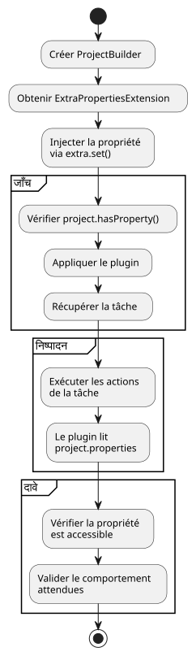

gradle.properties` के साथ Gradle यूनिट टेस्टिंग चुनौती को सुलझाएँ
Publié le 13 July 2025
समस्या: Gradle प्लगिन के यूनिट टेस्ट्स को अलग करना
Gradle प्लगिन के लिए यूनिट परीक्षण लिखते समय, एक सामान्य चुनौती प्रोजेक्ट की कॉन्फ़िगरेशन के अनुसार निर्भरताओं को प्रबंधित करने की है, जैसी फ़ाइल में परिभाषित गुण`gradle.properties`. हमारे केस में, प्लगइन`jbake.ghpages`एक संपत्ति पढ़नी थी`site_config_path`सही ढंग से काम करने के लिए. कार्य के लिए यूनिट परीक्षण`initialize`प्लगइन के व्यवहार की जाँचना इस संपत्ति की उपस्थिति में करनी चाहिए थी।
मूल समस्या यह है कि यूनिट टेस्ट, डिज़ाइन द्वारा, इसोलेटेड होने चाहिए। का उपयोग`ProjectBuilder`Gradle का एक उदाहरण बनाता है`Project`मेमोरी में, फ़ाइल सिस्टम पर एक वास्तविक प्रोजेक्ट से पूरी तरह डिस्कनेक्टेड। इसलिए, इस टेस्ट इंस्टेंस द्वारा फ़ाइल को स्वचालित रूप से नहीं पढ़ा जाता।gradle.properties`और इसलिए संपत्ति की जानकारी नहीं है`site_config_path.
समस्या की वास्तुकला
निम्नलिखित आरेख परीक्षण वातावरण और फ़ाइल सिस्टम के बीच के असंपर्क को दर्शाता है :
एक गलत अच्छे विचार की आकर्षण
एक पहला दृष्टिकोण हो सकता है कि एक फ़ाइल बनाई जाए`gradle.properties`फर्जी परीक्षण संसाधनों में।
// src/test/resources/gradle.properties
site_config_path=src/jbake/settings/site.ymlहालाँकि, यह विधि विफल होने के लिए नियत है क्योंकि`ProjectBuilder`यह फ़ाइल सिस्टम को कॉन्फ़िगरेशन फ़ाइलों की खोज के लिए स्कैन करने के लिए डिज़ाइन नहीं किया गया है। परीक्षण अलग-थलग रहेगा और इस फ़ाइल को अनदेखा कर देगा।
समाधान: संपत्ति का सिमुलेट ExtraPropertiesExtension के साथ
इस समस्या का शानदार समाधान फ़ाइल को lire करने से नहीं है, बल्कि ऑब्जेक्ट में संपत्ति की उपस्थिति को simuler करने से है`Project`टेस्ट। Gradle इसके लिए एक शक्तिशाली तंत्र प्रदान करता है : अतिरिक्त गुण (Extra Properties).
चरण 1 : ExtraPropertiesExtension को समझें
`ExtraPropertiesExtension`यह Gradle मॉडल के प्रत्येक ऑब्जेक्ट से जुड़ा एक कुंजी-मूल्य कंटेनर है। यह परियोजना, किसी कार्य, या किसी अन्य Gradle एक्सटेंशन में गतिशील रूप से गुण जोड़ने की अनुमति देता है।

चरण 2 : परीक्षण की व्यवस्था - तैयारी
आइए, हम अपने यूनिट टेस्ट की बुनियादी संरचना बनाना शुरू करते हैं :
class JbakeGhPagesPluginTest {
@TempDir
lateinit var testProjectDir: File
@Test
fun `check initialize and config yaml file if not existing`() {
// Étape 1 : Créer un projet de test isolé
val project = ProjectBuilder.builder()
.withProjectDir(testProjectDir)
.build()
// Suite des étapes...
}
}चरण 3 : संपत्ति का इंजेक्शन
यह परियोजना में संपत्ति इंजेक्ट करने के लिए विस्तृत प्रक्रिया है :
@Test
fun `check initialize and config yaml file if not existing`() {
// Étape 1 : Créer un projet de test isolé en mémoire
val project = ProjectBuilder.builder()
.withProjectDir(testProjectDir)
.build()
// Étape 2 : Récupérer le gestionnaire de propriétés supplémentaires
val extra = project.extensions.getByType(ExtraPropertiesExtension::class.java)
// Étape 3 : Définir la propriété requise pour ce test
extra.set("site_config_path", "src/jbake/settings/site.yml")
// Étape 4 : Vérifier que la propriété est bien injectée
assertTrue(project.hasProperty("site_config_path"))
// Étape 5 : Appliquer le plugin qui pourra maintenant accéder à la propriété
project.plugins.apply("jbake.ghpages")
// Étape 6 : Exécuter la tâche et vérifier son comportement
val task: Task = project.tasks.findByName("initialize")
.apply(::assertNotNull)!!
// Étape 7 : Exécuter les actions de la tâche
task.actions.forEach { it.execute(task) }
// Étape 8 : Assertions finales
assertEquals(
"src/jbake/settings/site.yml",
project.properties["site_config_path"],
"La propriété devrait être accessible dans le projet"
)
}चरण 4: समाधान प्रवाह आरेख

चरण 5: पहले/पश्चात तुलना
चरण 6: कई टेस्ट केसों का प्रबंधन
विभिन्न परिदृश्यों का परीक्षण करने के लिए, विभिन्न कॉन्फ़िगरेशन के साथ कई परीक्षण बनाइए :
class JbakeGhPagesPluginTest {
@TempDir
lateinit var testProjectDir: File
private fun createProjectWithProperty(propertyValue: String?): Project {
val project = ProjectBuilder.builder()
.withProjectDir(testProjectDir)
.build()
// Injection conditionnelle de la propriété
propertyValue?.let { value ->
val extra = project.extensions.getByType(ExtraPropertiesExtension::class.java)
extra.set("site_config_path", value)
}
return project
}
@Test
fun `should work with valid property`() {
val project = createProjectWithProperty("src/jbake/settings/site.yml")
project.plugins.apply("jbake.ghpages")
val task = project.tasks.findByName("initialize")!!
task.actions.forEach { it.execute(task) }
// Assertions pour le cas normal
assertEquals("src/jbake/settings/site.yml", project.properties["site_config_path"])
}
@Test
fun `should handle missing property gracefully`() {
val project = createProjectWithProperty(null) // Pas de propriété
project.plugins.apply("jbake.ghpages")
val task = project.tasks.findByName("initialize")!!
// Le plugin devrait gérer l'absence de propriété
assertDoesNotThrow {
task.actions.forEach { it.execute(task) }
}
}
@Test
fun `should handle invalid property path`() {
val project = createProjectWithProperty("invalid/path/to/config.yml")
project.plugins.apply("jbake.ghpages")
val task = project.tasks.findByName("initialize")!!
// Test du comportement avec un chemin invalide
assertThrows<FileNotFoundException> {
task.actions.forEach { it.execute(task) }
}
}
}समाधान का अंतिम वास्तुकला
इस दृष्टिकोण के लाभ
-
पूर्ण पृथक्करणपरीक्षण किसी बाहरी फ़ाइल पर निर्भर नहीं है। यह स्वतंत्र है और किसी भी पर्यावरण (स्थानीय, CI/CD आदि) में विश्वसनीय रूप से चलाया जा सकता है।
-
स्पष्टता और इरादापरीक्षण स्पष्ट रूप से अपने निष्पादन के लिए पूर्व शर्तों की घोषणा करता है। जो कोई भी परीक्षण पढ़ता है, वह तुरंत देखता है कि प्लगिन को संपत्ति की आवश्यकता होती है।`site_config_path`चलने के लिए.
-
रखरखावीयता: यदि संपत्ति का नाम बदलता है, तो बस परीक्षण में एक स्थान पर इसे अपडेट करना पर्याप्त है, परीक्षण कॉन्फ़िगरेशन फ़ाइलों को संशोधित किए बिना।
-
लचीलापनपरीक्षण करना बहुत आसान हो जाता है विभिन्न परिदृश्यों का, क्योंकि प्रत्येक परीक्षण में इंजेक्ट की गई संपत्ति के मान को बस बदल दिया जाता है (वैध मान, अमान्य मान, अनुपस्थित, आदि)।
-
प्रदर्शन: फ़ाइलों की कोई पढ़ाई नहीं, सब मेमोरी में होता है, जो परीक्षणों को तेज़ बनाता है.
-
पुनरावृत्तिपरीक्षण निर्धारित हैं क्योंकि वे फ़ाइल सिस्टम की स्थिति पर निर्भर नहीं करते।
अच्छे अभ्यास और सलाह
एक उपयोगिता विधि बनाएँ
class GradleTestUtils {
companion object {
fun createProjectWithProperties(
projectDir: File,
properties: Map<String, String>
): Project {
val project = ProjectBuilder.builder()
.withProjectDir(projectDir)
.build()
val extra = project.extensions.getByType(ExtraPropertiesExtension::class.java)
properties.forEach { (key, value) ->
extra.set(key, value)
}
return project
}
}
}गुणों की पुष्टि
@Test
fun `should validate property injection`() {
val project = createProjectWithProperty("test-value")
// Vérifications multiples
assertTrue(project.hasProperty("site_config_path"))
assertEquals("test-value", project.property("site_config_path"))
assertNotNull(project.properties["site_config_path"])
// Vérification que la propriété est accessible par le plugin
project.plugins.apply("jbake.ghpages")
// ... reste du test
}निष्कर्ष
यूनिट परीक्षण वातावरण के लिए कॉन्फ़िगरेशन फ़ाइलें पढ़ने के लिए संघर्ष करने के बजाय, सर्वोत्तम अभ्यास आवश्यक स्थिति को अनुकरण करने से बना है। का उपयोग`ExtraPropertiesExtension`ग्रैडल गुणों को प्रोग्रामेटिक रूप से परिभाषित करने की विधि प्रभावी और विश्वसनीय प्लगइन यूनिट परीक्षण करने के लिए सबसे स्वच्छ और सबसे मजबूत तरीका है।
यह तकनीक एक बाह्य निर्भरता समस्या को एक सरल निर्भरता इंजेक्शन में बदल देती है, जो टेस्ट-ड्रिवन डेवलपमेंट (TDD) के दर्शन के मूल में होती है। यह परीक्षण पर्यावरण पर पूर्ण नियंत्रण प्रदान करती है जबकि उच्च गुणवत्ता वाले यूनिट परीक्षण के लिए आवश्यक अलगाव को बनाए रखती है।
इस लेख में प्रस्तुत आरेख और उदाहरण दिखाते हैं कि इस दृष्टिकोण को कैसे चरणबद्ध और प्रणालीगत तरीके से लागू किया जा सकता है, जिससे आपके Gradle प्लगइन के लिए एक मजबूत और बनाए रखने योग्य टेस्ट सूट बनाया जा सकता है।